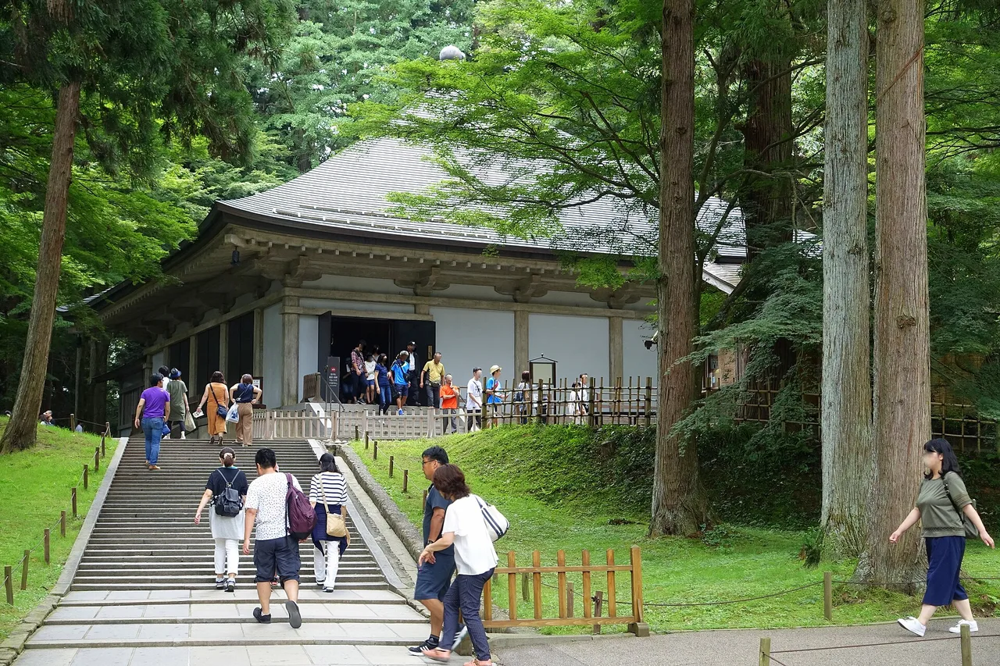

Iwate Travel Guide for Japanese Learners
A vast, rugged prefecture of temples, coastline, and cold-soba traditions.

Iwate is the second-largest prefecture by area and one of the least crowded. Its highlight is Hiraizumi, a UNESCO World Heritage site of Pure Land Buddhist temples and gardens.
History & background
Iwate (岩手) was the seat of the Northern Fujiwara, who built the gilded temples of Hiraizumi (平泉) in the 12th century as a Pure Land paradise on earth — now a UNESCO World Heritage Site.
What to see
- Chūson-ji and Mōtsū-ji temples in Hiraizumi (UNESCO)
- Geibikei and Genbikei gorges
- The dramatic Sanriku coast
- Morioka's historic streets
Hidden gems
- Takkoku no Iwaya Bishamonten is a 9th-century temple carved into a cliff face above the Kitakami River gorge, offering dramatic views and fewer crowds than Hiraizumi.
- Kamaishi's steel heritage includes the dramatic Kamaishi mine tunnels and coastal views where visitors can learn about the region's industrial past and recovery.
- Kuji's amber museum and beaches showcase Japan's largest amber deposits with golden-hour coastal walks and a small but excellent gem museum.
Some links above are affiliate links. We may earn a commission at no extra cost to you. We only list services we'd use ourselves.
What to eat
Morioka is famous for three noodles: wanko-soba, reimen, and jajamen.
Getting there & when to go
Getting there: Morioka is ~2h10m from Tokyo by Tōhoku Shinkansen.
Best time: Spring to autumn for hiking and the coast; summer for the wanko-soba challenge.
When to go — season by season
Spring and autumn are ideal for the Hiraizumi temples and the Sanriku (三陸) coast. Summer is festival and wanko-soba season in Morioka (盛岡); winter is quiet and snowy inland.
Local culture
Iwate's sake brewing tradition runs deep—local breweries in Morioka and surrounding towns welcome visitors to taste sake made from local water and rice. Many offer small group tastings where you'll see the meticulous craftsmanship that defines tohoku brewing culture.
Nambu ironware (南部鉄器) has been crafted in Iwate for over 400 years; you'll spot the distinctive black tetsubin (cast-iron kettles) and decorative pieces in local shops. The artisans' commitment to hand-finished detail reflects a philosophy of quality over speed.
A suggested visit
Start in Morioka for the famous noodles, then take the train to Hiraizumi to walk Chūson-ji (中尊寺) and Mōtsū-ji (毛越寺). Add the coast at Geibikei Gorge (猊鼻渓) if you have a third day.
Seasonal tip: October through early November is ideal for visiting—autumn colors peak in Hiraizumi's temple gardens, hiking trails are clear, and the coast is less rainy than September; avoid early May Golden Week when trains and temples are crowded.
Local etiquette: At Chūson-ji and Mōtsū-ji temples, remove your shoes before entering the inner halls and walk slowly through gardens; speaking in quiet voices is essential as these are active worship spaces, not merely tourist attractions.
At wanko-soba restaurants, put the lid on your bowl to signal you're full — otherwise refills keep coming.
Some links above are affiliate links. We may earn a commission at no extra cost to you. We only list services we'd use ourselves.
Common questions
Q. How do I get to Iwate from Tokyo?
A. The Tōhoku Shinkansen reaches Morioka in 2 hours 10 minutes. Book early for better fares, and consider a JR Pass if visiting multiple Tōhoku prefectures.
Q. What's the best time to visit Iwate?
A. Spring to autumn suits hiking and coastal sightseeing. Summer specifically offers the wanko-soba challenge in Morioka—a competitive eating tradition worth experiencing firsthand.
Q. Is Hiraizumi worth a day trip from Morioka?
A. Absolutely. Chūson-ji and Mōtsū-ji are UNESCO-listed Pure Land temples with gardens worth 3–4 hours. Combine with Morioka's three signature noodle dishes for a complete visit.